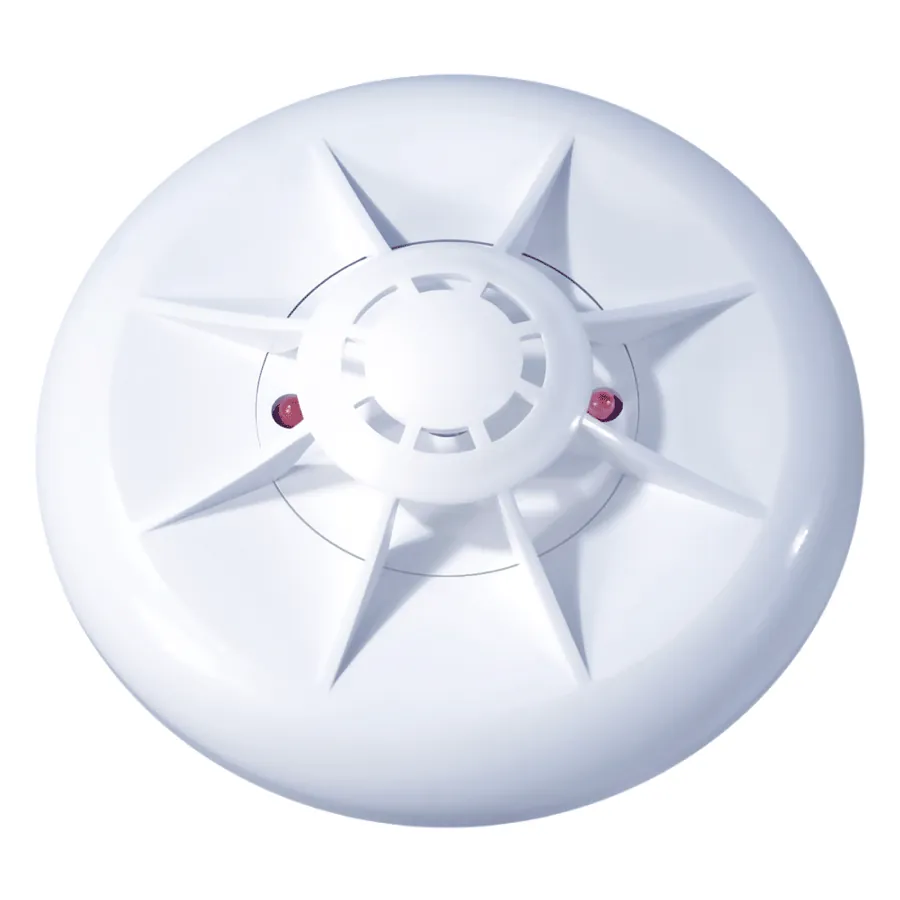

Пожежні сповіщувачі, виміряні за EN 54
ПП «АРТОН» з 1998 року розробляє і виробляє в Чернівцях сповіщувачі, приймально-контрольні прилади та адресну систему «Вектор». Характеристики, паспорти й сертифікати кожної моделі — в одному місці.
Часто шукають: , , ,

- Засновано
- 1998 рік, ПП «АРТОН»
- Виробництво
- Власне, Чернівці, вул. Прутська, 6
- Відповідність
- ДСТУ EN 54-5, -7, -11, -12, -29
- Поставки
- Україна · ЄС · Молдова
Номенклатура
Від точкового сповіщувача до адресної системи на об’єкт: усе, що потрібно для сигналізації, розроблено й зібрано на одному підприємстві.
Який тепловий сповіщувач потрібен приміщенню?
Вкажіть звичайну максимальну температуру в приміщенні — підкажемо клас за ДСТУ EN 54-5 і моделі АРТОН, що йому відповідають.
Підбір орієнтовний. Остаточний вибір — у проєкті згідно з ДБН В.2.5-56:2014 та паспортом виробу.
Адресна система «Вектор»
Власна розробка АРТОН: адресний ППКП, сповіщувачі, адаптери, релейні блоки, пульти й програмне забезпечення для конфігурування — усе від одного виробника.
Паспорти й сертифікати без пошуку
Документи прив’язані до моделей. Введіть код — і завантажуйте потрібний PDF.
| Модель | Документ |
|---|
Де купити
Продукцію АРТОН постачають офіційні дилери в обласних центрах України. Оберіть місто.
Прайс-лист станом на 13.08.2026
Новини підприємства
Рекомендації з проєктування СПСО на основі адресного ППКП «Вектор-1» з мінімізацією впливу несправностей у лініях зв’язку
Для проєктувальників: вимоги зміни №2 до ДБН В.2.5-56:2014 «Системи протипожежного захисту», розділ 20.
АРТОН на виставці Security Essen, Німеччина
Запрошуємо на стенд: зал 5, стенд 5C19, м. Ессен.
Сертифікат відповідності ДСТУ EN 54-29:2022 на мультисенсорні сповіщувачі SPD-3.3-N та SPD-3.5-N
Комбінація датчиків диму та тепла для загального застосування в системах пожежної сигналізації будівель.
Участь у міжнародній виставці SECUREX, Познань
Спільно з дистриб’ютором у Європейському Союзі.